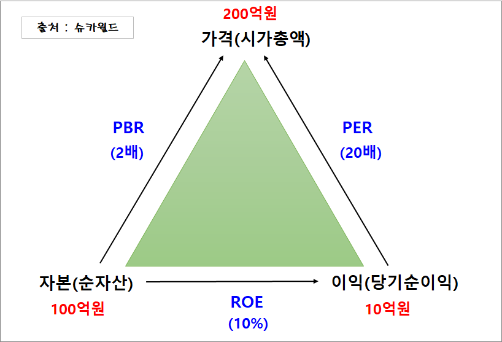

제로금리시대 투자를 하자
- 투자의 원칙
- 가치평가의 방법
- 주가의 흐름과 차트분
투자의 원칙
한눈에 이해하는 PBR,PBR,ROE 계산하기
① PER은 이익(당기순이익)대비 가격(시가총액)이 얼마인지를 나타내는 지표입니다. 이 기업의 PER은 20배가 되겠습니다.
② PBR 은 자본(순자산)대비 가격(시가총액)이 어느 수준인지를 나타내는 지표로, 이 기업의 PBR은 2배입니다.
③ ROE는 자기자본으로 어느정도 이익을 내는지를 보여주는 지표로, 이 기업의 경우 ROE가 10% 입니다.

출처